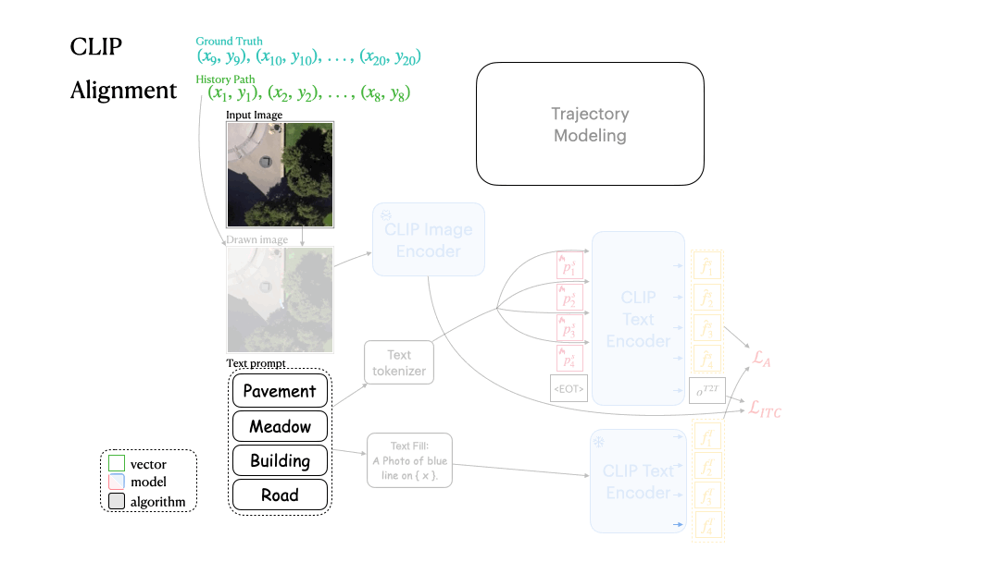

Trajectory Modeling
The basic idea of text generation is to compare the correctness of semantics on word embeddings, which has a pre-defined dictionary to collect all the possibilities of word tokens.
Cross-modal learning has shown promising potential to overcome the limitations of single-modality tasks. However, without a proper design of representation alignment between different data sources, the external modality has no way to exhibit its value.
We find that recent trajectory prediction approaches use Bird's-Eye-View (BEV) scene as additional source, but do not significantly improve the performance compared to the single-source strategies. This indicates that the representation of BEV scene and trajectory is not effectively combined.
To overcome this problem, we propose TrajPrompt, a prompt-based approach that seamlessly incorporates trajectory representation into the vision-language framework, i.e. CLIP, for BEV scene understanding and future forecasting. We discover that CLIP can attend to the local area of BEV scene by utilizing our innovative design of text prompt and colored lines. Comprehensive results demonstrate TrajPrompt's effectiveness via outperforming the state-of-the-art trajectory predictors by a significant margin (over 35% improvement for ADE and FDE metrics on SDD and DroneCrowd dataset), using fewer learnable parameters than the previous trajectory modeling approaches with scene information included.
Full
The basic idea of text generation is to compare the correctness of semantics on word embeddings, which has a pre-defined dictionary to collect all the possibilities of word tokens.
Alignment loss provides the detailed surrounding clues for localizing the trajectory and realizing its nearby environments.
We can also animate the scene by interpolating the deformation latent codes of two input frames. Use the slider here to linearly interpolate between the left frame and the right frame.
Work In Progress...
Work In Progress...
@inproceedings{tsao2024trajprompt
author = {Tsao, Li-Wu and Tsui, Hao-Tang and Tuan, Yu-Rou and Chen, Pei-Chi and Wang, Kuan-Lin and Wu, Jhih-Ciang and Shuai, Hong-Han and Cheng, Wen-Huang},
title = {TrajPrompt: Aligning Color Trajectory with Vision-Language Representations},
journal = {ECCV},
year = {2024},
}